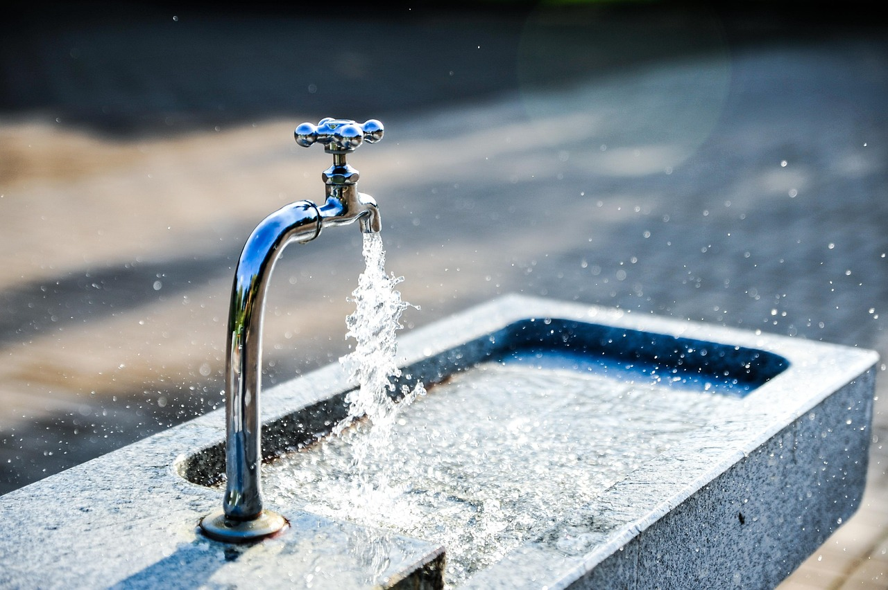

My Vocabulary Page
tap water n(u) //
[also: running water] water supplied through pipes to taps in a building
1/ "How much tap water does each person use at home every day?"
drink (the) tap water
1/ Is the tap water safe to drink?
1/ Avoid drinking the tap water when you first arrive in the country.
1/ "Did you drink tap water and get sick?"
1/ "Your home's tap water should be safe to drink."
1/ "Preferably tourists should be drinking tap water out of respect to
their hosts to reduce plastic pollution."
the safety of tap water
1/ "Most U.S. residents don't need to worry about the safety of their tap water."
1/ "People who do not trust the cleanliness and safety of tap water often
opt to purchase bottled water."
get/filter something out of tap water
1/ "How to get chlorine out of tap water?"
1/ "Can you filter lead out of tap water?"
1/ "Which pollutants are filtered out of the tap water?"
a filter for tap water
1/ "If your water is fluoridated, it is safest to use a reverse osmosis filter for
tap water that goes into your baby's formula, as fluoride can damage developing teeth."
tap water comes out warm/cold
1/ "Sometimes the tap water comes out warm."
1/ "The tap water comes out cold. It's been freshly aerated and filtered."
shut off tap water
1/ "The Aberdeen School District has shut off tap water at four schools."
1/ "On July 9, the city will reach day zero and be forced to shut off tap water for homes."
1/ "If unit will be idle for a period of time, ensure the tap water supply is shut off."
tap water supply is resumed
1/ "The fresh water supply of Tung Chung Town area was gradually resumed from about 10am today."
1/ "Tap water supply was resumed Wednesday in a south China town after a manganese contamination
had led to drinking water shortage for 13,000 people since Monday."
turn on/off a tap
1/ "When was the last time you turned on a tap?"
1/ "I turned off the tap before the water overflowed from the sink."
1/ "When you take a shower or turn on the warm tap to wash your face
in the morning, you might just get a whiff of sulfur."
1/ "You turn on the cold tap. It goes from cold to hot before settling again on cold."
see also: a tap, a faucet, n(u) drinking water, a drinking fountain